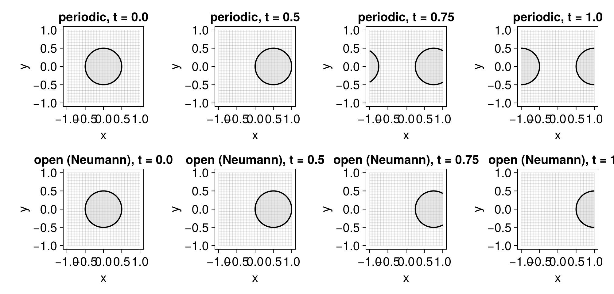
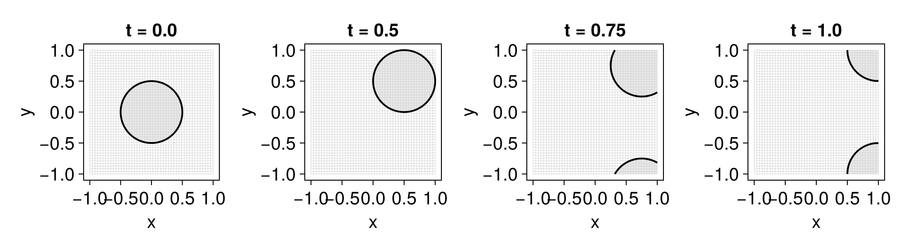
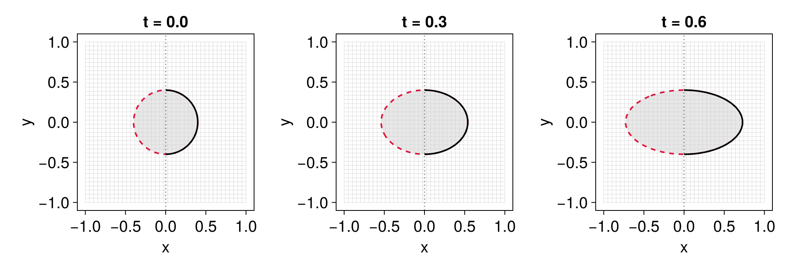

Boundary conditions
Finite-difference and WENO stencils reach beyond the mesh near its borders; a boundary condition supplies the missing ghost values. The following are available:
| Type | Description |
|---|---|
PeriodicBC | Periodic (wrap-around) |
SymmetryBC | Symmetry plane (reflection; for axisymmetric problems) |
ExtrapolationBC{P} | P-th order one-sided polynomial extrapolation |
NeumannBC | Alias for ExtrapolationBC{0} (constant extension, ∂ϕ/∂n = 0) |
LinearExtrapolationBC | Alias for ExtrapolationBC{1} (linear extrapolation, ∂²ϕ/∂n² = 0) |
ExtrapolationBC{P} uses the P+1 nearest interior cells to build a degree-P polynomial and extrapolates it into the ghost region; higher P gives smoother outflow at the cost of a wider stencil.
Specifying conditions per face
When constructing a level-set equation you can pass up to $2d$ boundary conditions, one per face, where $d$ is the dimension. The convention is:
- a single boundary condition is applied to all $2d$ faces;
- a length-$d$ collection
bcsassignsbcs[i]to directioni, and therebcs[i]may be- a single condition, applied to both faces of direction
i, or - a tuple
(lo, hi)of two conditions, applied to the lower/left and upper/right face.
- a single condition, applied to both faces of direction
Periodic vs. open boundaries
The clearest way to see what a condition does is to watch the same flow leave the domain under different boundaries. We advect a disk to the right with $\boldsymbol u = (1, 0)$: a PeriodicBC wraps it back in from the left, while a NeumannBC lets it flow out cleanly.
using LevelSetMethods, GLMakie
LevelSetMethods.set_makie_theme!()
grid = CartesianGrid((-1, -1), (1, 1), (48, 48))
ϕ₀ = MeshField(x -> sqrt(x[1]^2 + x[2]^2) - 0.5, grid)
𝐮 = AdvectionTerm((x, t) -> (1, 0))
eq_periodic = LevelSetEquation(; ic = ϕ₀, bc = PeriodicBC(), terms = 𝐮)
eq_open = LevelSetEquation(; ic = ϕ₀, bc = NeumannBC(), terms = 𝐮)
fig = Figure(; size = (1000, 480))
for (n, t) in enumerate((0.0, 0.5, 0.75, 1.0))
integrate!(eq_periodic, t)
integrate!(eq_open, t)
ax1 = Axis(fig[1, n]; title = "periodic, t = $t")
plot!(ax1, eq_periodic)
ax2 = Axis(fig[2, n]; title = "open (Neumann), t = $t")
plot!(ax2, eq_open)
end
fig
For higher-order outflow, use ExtrapolationBC{P} directly: ExtrapolationBC(5), say, fits a degree-5 polynomial through the 6 nearest interior cells. Higher P smooths the extrapolation into the ghost region at the cost of a wider stencil; for plain outflow like the above it behaves much like NeumannBC.
Mixing conditions
Pass a per-direction tuple to combine conditions — here open in x, periodic in y, under a diagonal flow $\boldsymbol u = (1, 1)$:
bc = (NeumannBC(), PeriodicBC()) # Neumann in x, periodic in y
eq = LevelSetEquation(; ic = ϕ₀, bc, terms = AdvectionTerm((x, t) -> (1, 1)))
fig = Figure(; size = (1000, 280))
for (n, t) in enumerate((0.0, 0.5, 0.75, 1.0))
integrate!(eq, t)
ax = Axis(fig[1, n]; title = "t = $t")
plot!(ax, eq)
end
fig
Symmetry planes
A SymmetryBC treats a boundary as a mirror: the field is reflected across it, so the interface meets the boundary perpendicularly. Like NeumannBC it enforces $\partial\phi/\partial n = 0$, but by reflection rather than flat extension — exactly the condition that holds on the axis of a symmetric problem. That lets you simulate only half of such a problem and recover the rest by reflection.
Below we stretch a disk centred on the axis $x = 0$ by the symmetric strain flow $\boldsymbol{u} = (x, 0)$, solving it twice: on the full domain, and on the right half with a SymmetryBC on the axis. We overlay the two — full solution solid, half solution a dashed red contour, axis $x = 0$ dotted. The recipe forwards standard Makie attributes (color, linestyle, linewidth, and a fill toggle for the interior shading), which is what lets the half solution be drawn as a bare contour on top of the full one:
𝐯 = (x, t) -> (x[1], 0.0) # symmetric about x = 0 (uₓ is odd in x)
ic(g) = MeshField(x -> hypot(x...) - 0.4, g)
grid_full = CartesianGrid((-1.0, -1.0), (1.0, 1.0), (40, 40))
grid_half = CartesianGrid(( 0.0, -1.0), (1.0, 1.0), (20, 40)) # right half only
eq_full = LevelSetEquation(; ic = ic(grid_full), bc = NeumannBC(), terms = AdvectionTerm(𝐯))
# SymmetryBC on the axis face (x = 0) only; Neumann on the remaining faces
eq_half = LevelSetEquation(; ic = ic(grid_half), bc = ((SymmetryBC(), NeumannBC()), NeumannBC()), terms = AdvectionTerm(𝐯))
fig = Figure(; size = (1000, 340))
for (n, t) in enumerate((0.0, 0.3, 0.6))
integrate!(eq_full, t)
integrate!(eq_half, t)
ax = Axis(fig[1, n]; title = "t = $t")
plot!(ax, eq_full; color = :crimson, linestyle = :dash)
plot!(ax, eq_half; fill = false, showgrid = false)
vlines!(ax, [0.0]; color = (:black, 0.4), linestyle = :dot) # the symmetry axis
end
fig
At every instant the dashed half-domain interface lies on the right half of the solid full-domain one: the SymmetryBC reproduces the symmetric solution from half the domain — the missing left half being just its mirror image — at half the computational cost.
For the precise stencil each condition applies, see the docstring of the corresponding type.